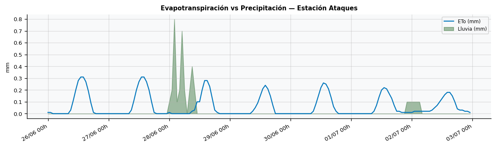
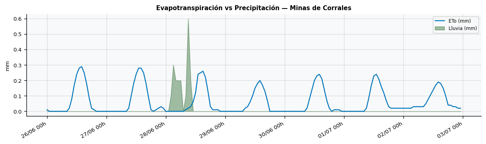
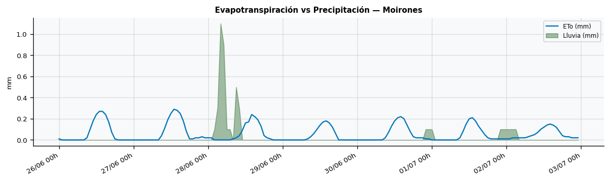
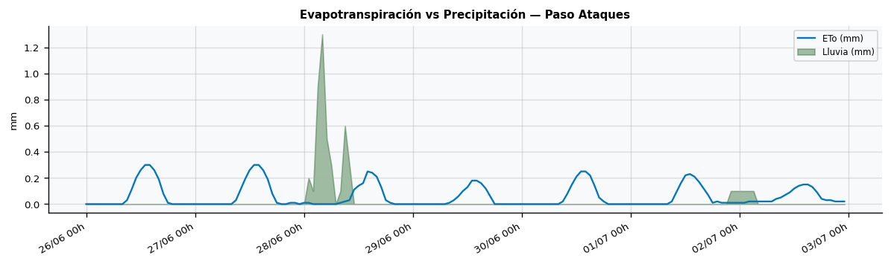
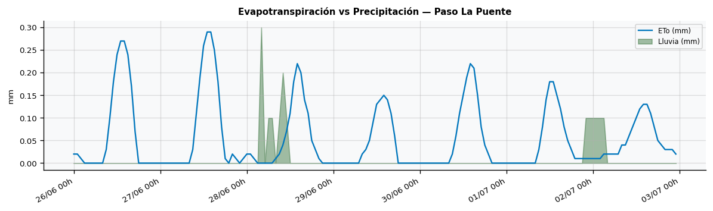
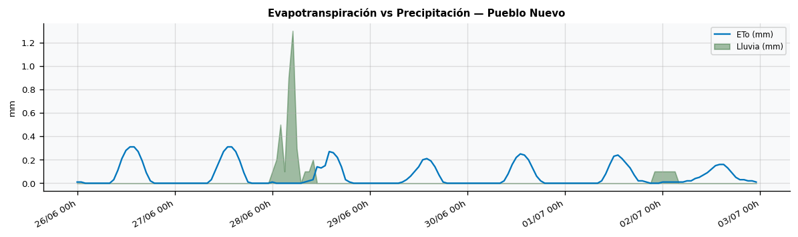
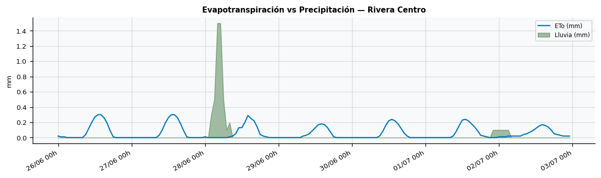
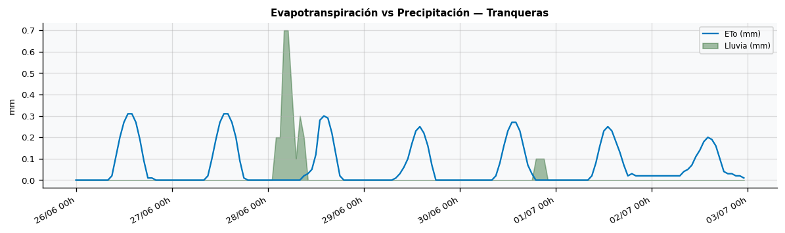
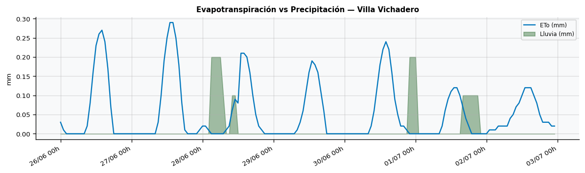

Departamento de Rivera · Generado el 2026-06-26 · Fuente: Open-Meteo
Compara la evapotranspiración de referencia (ETo, línea azul) con la precipitación horaria (área verde). Cuando ETo supera la lluvia se genera demanda hídrica insatisfecha en el cultivo.








